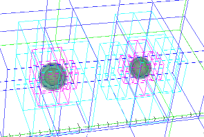
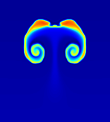
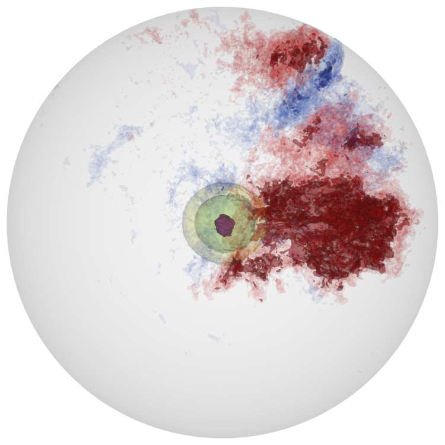
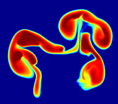
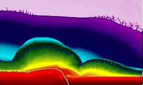

Michael Zingale
researchCurrent Research
White Dwarf Mergers

We are modeling the inspiral of binary white dwarfs with the compressible Castro code to explore the double degenerate mechanism for Type Ia supernovae.
in collaboration with Max Katz, Alan Calder, Doug Swesty (Stony Brook); Ann Almgren, and John Bell (CCSE/LBL), supported by the NSFsub-Chandra SN Ia

We are exploring the convective burning leading up to the ignition of a burning front in a helium layer on the surface of a white dwarf.
in collaboration with Adam Jacobs, Ann Almgren, John Bell, and Andy Nonaka (CCSE/LBL), supported by DOE Office of Nuclear Physics
X-ray bursts

X-ray bursts are the thermonuclear explosion of a thin H/He layer on the surface of a neutron star. Our multi-dimensional simulations capture the dynamics of the convection leading up to the burst, using the low Mach number hydrodynamics code, MAESTRO.
in collaboration with Chris Malone (LANL) and Ann Almgren, John Bell, and Andy Nonaka (CCSE/LBL), supported by DOE Office of Nuclear PhysicsMaestro

Traditional astrophysical hydrodynamics codes have timesteps that are limited by the sound-crossing time across a zone. For very subsonic flows, this is inefficient. We developed a new algorithm for the efficient simulation of reaction-driven convection in stars. By filtering out soundwaves, we are able to evolve the star for long periods of time. The resulting code, Maestro, is publicly available.
in collaboration with Ann Almgren, John Bell, and Andy Nonaka (CCSE/LBL), supported by DOE Office of Nuclear Physics
Previous Research
White Dwarf Convection

For centuries preceding the explosion of a Type Ia supernova, reactions at the center of the white dwarf slowly heat the star, driving convection. Hot plumes buoyantly rise and cool via expansion. As the star continues to heat up, eventually the reactions proceed fast enough that a plume cannot cool via expansion, and ignition takes place. Understanding where the initial flames form is critical to understanding the subsequent explosion. We model the final stages of convection in a white dwarf, preceding the ignition and explosion of a Type Ia supernovae.
in collaboration with Ann Almgren, John Bell, Andy Nonaka (CCSE/LBL), and Stan Woosley (UCSC); supported by the DOE Office of Nuclear Physics)Reacting Buoyant Bubbles

When the first flames ignite in a Type Ia supernova, they buoyantly float upward as they burn outward. We have performed fully resolved studies of burning rising bubbles in both two and three dimensions in conditions appropriate to Type Ia supernovae to better understand these dynamics.
in collaboration (CCSE/LBL), and Jonathan Dursi; supported by DOE Office of Nuclear Physics)
Reactive Rayleigh Taylor

The Rayleigh-Taylor instability plays a critical role in accelerating the burning front in Type Ia supernovae. We performed the first three-dimensional, direct numerical simulations of carbon flames in Type Ia supernovae undergoing the Rayleigh-Taylor instability and the transition to turbulence.
in collaboration (CCSE/LBL) and Stan Woosley (UCSC))Helium Detonations on Neutron Stars

Two-dimensional calculations of the dynamics of the explosion from my thesis. We follow the detonation wave as it propagates 2 km across the surface of the neutron star.
in collaboration with the Flash Center